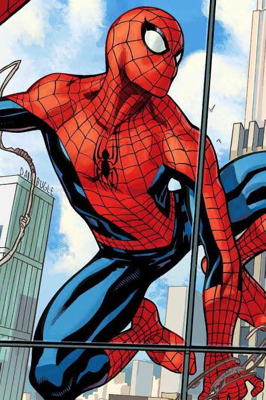

Peter Parker es un joven estudiante de secundaria que vive en Nueva York. Un día, mientras asistía a una exposición científica, fue mordido por una araña radiactiva. Esta mordedura le otorgó habilidades sobrehumanas, como fuerza, agilidad y la capacidad de trepar paredes. Decidió usar sus poderes para luchar contra el crimen y proteger a los inocentes, convirtiéndose en el superhéroe conocido como Spiderman.
